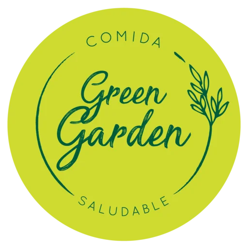

Desayuno Saludable
Comienza tu día con energía y vitalidad con nuestras recetas de desayuno saludables.

Explora nuestras recetas más populares y saludables para inspirar tus comidas diarias. En Comida Saludable, creemos que comer bien no tiene por qué ser complicado. Nuestras recetas están diseñadas para ser fáciles de preparar, deliciosas y nutritivas, utilizando ingredientes frescos y accesibles.
Desde desayunos energéticos hasta cenas ligeras, tenemos opciones para todos los gustos y necesidades.
¡Empieza a cocinar hoy mismo y disfruta de los beneficios de una alimentación saludable!

Comienza tu día con energía y vitalidad con nuestras recetas de desayuno saludables.

Disfruta de almuerzos equilibrados y deliciosos que te mantendrán satisfecho durante horas.

Termina tu día con cenas ligeras y nutritivas que te ayudarán a descansar mejor.

Encuentra snacks deliciosos y saludables para mantener tu energía entre comidas.
| Beneficio | Descripción |
|---|---|
| Mejora la salud cardiovascular | Una dieta rica en frutas, verduras y grasas saludables puede reducir el riesgo de enfermedades del corazón. |
| Aumenta la energía | Comer alimentos nutritivos proporciona los nutrientes necesarios para mantener altos niveles de energía durante el día. |
| Control del peso | Una alimentación equilibrada ayuda a mantener un peso saludable y prevenir la obesidad. |
| Mejora la digestión | Los alimentos ricos en fibra, como frutas y verduras, promueven una digestión saludable y previenen el estreñimiento. |
| Fortalece el sistema inmunológico | Una dieta rica en vitaminas y minerales fortalece el sistema inmunológico, ayudando a prevenir enfermedades. |